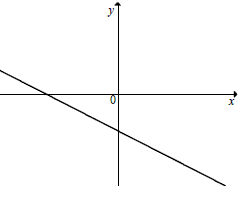

Wykres funkcji liniowej
Wykresem funkcji liniowej jest linia prosta.
Żeby narysować wykres funkcji liniowej, wystarczy wyznaczyć dwa punkty, które do niego należą.
Żeby narysować wykres funkcji liniowej, wystarczy wyznaczyć dwa punkty, które do niego należą.
Narysuj wykres funkcji liniowej \(y=x+3\).
Obliczamy współrzędne dwóch dowolnych punktów przez które przechodzi
nasza prosta.
Dla \(x=0\) mamy: \[y=0+3=3\] Czyli do wykresu funkcji należy punkt o
współrzędnych \((0,3)\).
Dla \(x=1\) mamy: \[y=1+3=4\] Czyli do wykresu funkcji
należy punkt o współrzędnych \((1,4)\).
Narysuj wykres funkcji liniowej \(y=2x-1\).
Obliczamy współrzędne dwóch dowolnych punktów przez które przechodzi
nasza prosta.
Dla \(x=0\) mamy: \[y=2\cdot 0-1=0-1=-1\] Czyli do wykresu funkcji należy
punkt o współrzędnych \((0,-1)\).
Dla \(x=1\) mamy: \[y=2\cdot 1-1=2-1=1\] Czyli
do wykresu funkcji należy punkt o współrzędnych \((1,1)\).
Narysuj wykres funkcji liniowej \(y=-\frac{1}{3}x-2\).
Obliczamy współrzędne dwóch dowolnych punktów przez które przechodzi
nasza prosta.
Dla \(x=0\) mamy: \[y=-\frac{1}{3}\cdot 0-2=0-2=-2\] Czyli do wykresu
funkcji należy punkt o współrzędnych \((0,-2)\).
Dla \(x=3\) mamy:
\[y=-\frac{1}{3}\cdot 3-2=-1-2=-3\] Czyli do wykresu funkcji należy punkt o współrzędnych
\((3,-3)\).
Na filmie pokazuję praktyczną metodę na szybkie rysowanie dokładnych wykresów
funkcji liniowych.
Czas nagrania: 13 min.
Kiedy funkcja liniowa jest rosnąca, a kiedy malejąca?
Weźmy funkcję liniową: \[y=ax+b\] gdzie:
\(a\) - to współczynnik kierunkowy,
\(b\) - to wyraz wolny.
Wówczas: \(a\) - to współczynnik kierunkowy,
\(b\) - to wyraz wolny.
- jeżeli \(a \gt 0\), to funkcja liniowa jest rosnąca,
- jeżeli \(a \lt 0\), to funkcja liniowa jest malejąca,
- jeżeli \(a = 0\), to funkcja liniowa jest stała.
Miejsce zerowe
Miejsce zerowe funkcji liniowej można obliczyć przyrównując wzór funkcji do zera: \[ax+b=0\] Z powyższego równania wynika wzór: \[x=-\frac{b}{a}\]Proste równoległe i prostopadłe
Dwie proste o równaniach \[\begin{split} &y=a_1x+b_1\\[6pt] &y=a_2x+b_2 \end{split}\]- są równoległe, jeżeli ich współczynniki kierunkowe są równe, czyli: \[a_1=a_2\]
- są prostopadłe, jeżeli ich współczynniki kierunkowe spełniają zależność: \[a_1\cdot a_2=-1\]
Na rysunku przedstawiony jest fragment wykresu pewnej funkcji liniowej \(y=ax+b\). 
Jakie znaki mają współczynniki \(a\) i \(b\)?
A.\(a\lt 0\) i \(b\lt 0\)
B.\(a\lt 0\) i \(b>0\)
C.\(a>0\) i \(b\lt 0\)
D.\(a>0\) i \(b>0\)
A
Jeden z rysunków przedstawia wykres funkcji liniowej \(f(x)=ax+b\), gdzie \(a>0\) i
\(b\lt 0\). Wskaż ten wykres. 
C
Funkcja \(f(x) = 0{,}5x - 6\)
A.jest malejąca i jej wykres przechodzi przez punkt \((0, 6)\)
B.jest rosnąca i jej wykres przechodzi przez punkt \((0, 6)\)
C.jest malejąca i jej wykres przechodzi przez punkt \((0, -6)\)
D.jest rosnąca i jej wykres przechodzi przez punkt \((0, -6)\)
D
Funkcja liniowa \( f(x)=(m^2-4)x+2 \) jest malejąca, gdy
A.\(m\in (-\infty,-2) \)
B.\(m\in (2,+\infty) \)
C.\(m\in \lbrace -2,2 \rbrace \)
D.\(m\in (-2,2) \)
D
Funkcja liniowa \( f(x)=ax+b\ \) jest rosnąca i ma dodatnie miejsce zerowe. Stąd
wynika, że
A.\(a>0\) i \( b>0 \)
B.\(a\lt 0\) i \( b\lt 0 \)
C.\(a\lt 0\) i \( b>0 \)
D.\(a>0\) i \( b\lt 0 \)
D
Na rysunku przedstawiono fragment prostej o równaniu \(y=ax+b\).  Współczynnik kierunkowy tej prostej
jest równy
Współczynnik kierunkowy tej prostej
jest równy
Współczynnik kierunkowy tej prostej
jest równy A.\( a=-\frac{3}{2} \)
B.\( a=-\frac{2}{3} \)
C.\( a=-\frac{2}{5} \)
D.\( a=-\frac{3}{5} \)
B
Wykres funkcji liniowej \(y = 2x − 3\) przecina oś \(Oy\) w punkcie o współrzędnych
A.\( (0,-3) \)
B.\( (-3,0) \)
C.\( (0,2) \)
D.\( (0,3) \)
A
Funkcja \(f\) jest określona dla każdej liczby rzeczywistej \(x\) wzorem
\(f(x)=(m\sqrt{5}-1)x+3\). Ta funkcja jest rosnąca dla każdej liczby \(m\) spełniającej warunek
A.\( m\gt\frac{1}{\sqrt{5}} \)
B.\( m\gt1-\sqrt{5} \)
C.\( m\lt\sqrt{5}-1 \)
D.\( m\lt\frac{1}{\sqrt{5}} \)